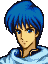
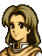
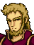
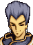

ワールドマップ
セリス皇子率いる解放軍の活躍は
帝国の圧政に苦しむ人々を勇気づけ、Prince Celice's Liberation Army and its exploits encouraged the people suffering under the Empire's tyranny,
各地で住民の反乱が相次いだ。and uprisings among the people broke out one after another across the land.
だが、その多くは
まとまりのないまま簡単に撃破され、But most of them, lacking any unity, were easily crushed,
大勢の人々が
帝国兵の犠牲となっていた。and great numbers of people fell victim to the Empire's soldiers.
トラキア半島のレンスター王国ではOn the Thracia Peninsula, in the kingdom of Leonster,
キュアンの子、リーフ王子が
フィンにたすけられて挙兵したが、Quan's son, Prince Leaf, had raised an army with Finn's help,
ブルーム王の大軍の前に惨敗をきっし、
敵地の中に孤立していた。but suffered a crushing defeat before King Bloom's great host, and was now isolated deep in enemy territory.
イード砂漠を支配する神殿には
ロプト教団のクトゥーゾフ、At the temple ruling the Yied Desert was Kutuzov of the Loptr cult,
オアシスの街ダーナにはand in the oasis town of Darna
商人上がりのブラムセルと
傭兵隊長ジャバロー、were the merchant-turned-lord Bramsel and the mercenary captain Jabarro,
メルゲン城にはイシュトー王子と
有能なる女将軍ライザ、while at Melgen Castle were Prince Ishtore and the capable lady general Raiza,
王都アルスターには
レプトール公爵の息子、ブルームとand in the capital Alster were Bloom, son of Duke Reptor,
その姪である、女魔道士and his niece, the mage girl Tinny.
そして、リボーの街ではセリスを
始めとするイザーク解放軍の戦士達が、Meanwhile, in the city of Ribot, the warriors of the Isaac Liberation Army, led by Celice,
はるか彼方にあるレンスターの仲間を
救うべく旅立とうとしていたのである。were preparing to set out to save their distant comrades in Leonster.
それぞれのむねに思いを秘めてEach carrying their own private hopes in their hearts,
今、セリスたちの新たなる戦いが
始まろうとしていた。Celice and his companions' new battle was now about to begin.
Opening
(フィンがレンスター城に向かう)
オープニング（レンスター）

フィン、状況はどうだ？
先発した部隊からの連絡はまだか(Leaf): Finn, how do things stand? Is there still no word from the unit we sent ahead?

・・・残念ながら反乱は失敗しました
アルスターの攻略に向かった部隊は全滅(Finn): ...Unfortunately, the uprising has failed. The unit that went to attack Alster was wiped out entirely.
もはやわれらの兵は、
一人も残っていません(Finn): We no longer have a single soldier left.
そんな・・・
やっとチャンスが来たというのに、
すべてはムダだったのか・・・(Leaf): No... just when our chance had finally come, was it all for nothing...
くそっ、ブルームめ、
次は私が相手になってやる！(Leaf): Damn it, Bloom... next time, I'll be the one who faces you!
リーフ王子、落ちついて下さい
まだ終わったわけではありません
レヴィン様との約束があるのです(Finn): Prince Leaf, please calm yourself. This isn't over yet. Remember the promise we made with Lord Levin —
セリス様の解放軍が
レンスターに向かうから、それまでは、
なんとしても持ちこたえるのだと(Finn): that Lord Celice's Liberation Army is heading for Leonster, and that until then, we must hold on no matter what.
セリス皇子・・・
父上の親友だったシグルド公子と
皇女ディアドラ様の遺児だという・・・(Leaf): Prince Celice... the orphaned child of Lord Sigurd, my father's close friend, and Princess Deirdre, they say...
お会いしたい・・・彼と力をあわせれば、
帝国の圧政に苦しむ人々を
救えるかもしれない(Leaf): I'd like to meet him... if we join our strength together, we might be able to save the people suffering under the Empire's tyranny.

そうですよ、リーフ様、いまここで
あなたまで失えば、兵士達はそれこそ
犬死となってしまいます(Nanna): That's right, Lord Leaf. If we lose you here too, the soldiers' deaths will have been for nothing.
とりあえず今はこの城を捨てて、
西の教会あたりに身を隠しましょうよ(Nanna): For now, let's abandon this castle and go into hiding somewhere around the church to the west.
そうだな・・・・
それも一つの手かもしれない(Leaf): I suppose... that might be one option.
わかった、いずれにしても、
もう少しがんばってみよう
せめて、セリス皇子と会うまではな・・・(Leaf): Alright, in any case, let's hold out a little longer... at least until I can meet Prince Celice...
(レンスター城から、リーフ、フィン、ナンナが登場)
オープニング（アルスター）

どうしたというのだ
なぜあんな、小さな城も攻略できぬ？
きさまら、まじめにやっておるのか！(Bloom): What is going on? Why can't you take even such a small castle? Are you lot even trying!

はぁ・・・しかし、
敵の防衛線を突破するのは、
きわめて困難で・・・(Philip): Haa... but, breaking through the enemy's defensive line has proven extremely difficult...
ばかもの！
言い訳などききたくもないわ
さっさとレンスター城を落とすのだ！(Bloom): Fools! I don't want to hear excuses — hurry up and take Leonster Castle!
グズグズしてると
イザークの反乱軍がやってくるぞ！(Bloom): If we dawdle, the Isaac rebels will come!
はっ、すぐに出撃いたします(Philip): Yes sir, we'll set out at once.
(アルスター城から、ブルーム、たいちょう率いるアルスター軍が登場)
オープニング（イード）

ウワサどおり、宝物がいっぱいあったな
ひさびさに、いい仕事できちゃった(Patty): Just as the rumors said, there was a ton of treasure here — it's been a good while since I've had such a good haul.
なーんて、ゆっくり見てる場合じゃないか！
さっさと逃げようっと(Patty): Well, no time to stand around admiring it — better make a quick getaway.
(イード城から、シャナン、パティが登場)

おい、待て、他のものは良いが、
その剣だけは私によこせ(Shanan): Hey, wait. Everything else can go, but that sword — hand it over to me.
なによあんた
人の稼ぎをよこどりするつもり？(Patty): What's with you? You trying to swipe my hard-earned loot?
いやだよ、この剣は
いちばん苦労したんだからね
ばーか、ほしかったらここまでおいで(Patty): No way, this sword was the one I worked hardest for — if you want it, come and get it, you dummy.
ま、まて！(Shanan): W-, wait!
(パティが1マス左へ移動)
なに？
宝物殿が盗賊に荒らされただと？(Kutuzov): What? The treasury's been ransacked by thieves, you say?
バルムンクまで奪われたというのか！？
ばかものっ、すぐに後を追え！(Kutuzov): Even the Balmung was stolen!? You fools, chase after them at once!

ははっ、
しかしクトゥーゾフ様(Dark Priest): Hah, but Lord Kutuzov,
あなたの暗黒魔道なら
盗賊など一撃のもとに
ほうむりされるのでは？(Dark Priest): with your dark sorcery, surely mere thieves would be dealt with in a single blow, wouldn't they?
フェンリルの魔法か・・・
わかっておるが、見あたらぬのじゃ
部下に命じて探させておるが・・・(Kutuzov): The magic of Fenrir, you mean... I know that well enough, but I can't find the tome. I've ordered my men to search for it, but...
わかりました
では、われわれと傭兵どもとで、
おいかけましょう(Dark Priest): Understood. Then let us and the mercenaries go after them.
ご心配はいりません
奪われた宝物は
すぐに取り返してまいります(Dark Priest): There's no need to worry. We'll retrieve the stolen treasure in no time.
(イード城から、クトゥーゾフ率いるイード軍が登場)
オープニング（リボー）

レンスターに行くには、
この広大な砂漠を
こえなければならないのか(Celice): To reach Leonster, we have to cross this vast desert, don't we...
そうだ・・・その上、イードの神殿は
ロプト教団に支配され、(Levin (Strategist)): That's right... and on top of that, the Temple of Yied is now under the Loptr cult's control,
暗黒魔道士どもが、
砂漠を行く者を容赦なくおそうという(Levin (Strategist)): and they say dark sorcerers there show no mercy to anyone who tries to cross the desert.
いまやイード砂漠は、
死の砂漠と呼ばれている(Levin (Strategist)): These days the Yied Desert is known as the Desert of Death.
それでは旅人達が困っているだろう
なんとかイードの神殿を
制圧できないものだろうか(Celice): Then travelers must be in real trouble. Isn't there some way we could take the Temple of Yied?
ふっ・・・そう言うと思った
方法はあるさ、だが、容易なことでない
かなりの犠牲を覚悟せねばならないぞ(Levin (Strategist)): Heh... I thought you'd say that. There is a way, but it won't be easy — we'll have to be prepared for considerable losses.
それはわかっている
でも、すててはおけないよ(Celice): I understand that. But I can't just leave it be.
シャナンのことも気がかりだし、
まずはイードの攻略をめざそう
すべてはそれからだ！(Celice): Shanan's safety weighs on my mind too — first, let's aim to take Yied. Everything starts from there!
2ターン目のイード軍フェーズ終了後（ダーナ）
ブラムセル様
イザークの反乱軍が動き出したようです(Soldier): Lord Bramsel, it seems the Isaac rebels have made their move.

反乱軍だと？
れいのセリスとかいう小僧か？
ふふふ・・・これは面白い(Bramsel): The rebels, you say? That brat they call Celice? Hehehe... now this is interesting.
ヤツの首には
高い賞金がかかっているからな、
なんとしてもわが手でしとめたいものよ(Bramsel): There's a hefty bounty on that fellow's head — I'd love to be the one to finish him off myself.
よし、良い方法がある、しばらくは
国境をとざして、ようすをみよ
ヤツらが戦いつかれたときがチャンスだ(Bramsel): Alright, I have a good plan. For now, let's seal the border and watch how things go — the moment they tire themselves out from fighting will be our chance.
ジャバローの傭兵隊に、
準備をおこたるなと言っておけ！(Bramsel): Tell Jabarro's mercenaries not to slack off on their preparations!

なんだか、さわがしくなってきたわね
もしかして、戦争でも始まったの？(Lene): Hmm, things have gotten noisy around here lately. Could it be that a war's started or something?

そんなたいそうなものじゃない
イザークの反乱軍にそなえて、
準備をしているだけだ(Ares): It's nothing that grand. We're just preparing in case the Isaac rebels show up.
そう、良かった
アレスも行くのかなって、
ちょっと心配しちゃった(Lene): Oh, I see, that's good. I was a little worried whether you'd be going too, Ares.
戦いになれば俺も行く、傭兵だからな
それに、反乱軍を指揮してるのは
あのシグルドの息子だというし・・・(Ares): If it comes to a fight, I'll go — I am a mercenary, after all. And besides, I hear the one leading the rebels is that Sigurd's son...
できれば俺の手で、倒したいと思ってる
父上のかたきだからな・・・(Ares): If I can, I'd like to be the one to strike him down with my own hand. He's my father's enemy, after all...
あはは、まだそんな事を言ってる
バカね、(Lene): Ahaha, you're still saying things like that. Silly man,
あなたのお父さんも、
そのシグルドっていう人も
騎士だったんでしょ(Lene): your father, and that Sigurd fellow too, were both knights, weren't they.
だったら人殺しが仕事じゃない(Lene): In that case, isn't killing people just their job?
あたしだって、いやらしい男達の前で
踊るのはイヤだけど
これも仕事だからとガマンしてるの(Lene): Even I don't like dancing in front of those sleazy men, but I put up with it because it's my job too.
生きて行くためにはしかたないじゃない
それを逆うらみするなんて、
男らしくないと思うな(Lene): There's no helping it if you want to go on living — holding a grudge over that isn't very manly, if you ask me.
リーン・・・わかったよ
もう少しかんがえてみる
俺だって・・・わかっているさ・・・(Ares): Lene... alright, I understand. I'll think about it a little more. I... I know, really...
12ターン目のイード軍フェーズ
クトゥーゾフ様、
フェンリルの魔道書がみつかりました(Dark Priest): Lord Kutuzov, we've found the Fenrir tome.
なに？ やっとみつけたか！
ふふふ・・・これで奴等もおしまいじゃ(Kutuzov): What? You finally found it! Hehehe... this is the end for them now.
フェンリルの恐ろしさ、
とくと思い知るがよいわ(Kutuzov): Let them learn well just how terrifying Fenrir truly is.
会話（シャナン→パティ）
きゃー、やめて！
お嫁にいけなくなっちゃう！(Patty): Eek, stop it! I won't be able to get married!
バカをいうな、私はなにもしない
その剣をかえしてほしいだけだ(Shanan): Don't be absurd, I'm not going to do anything to you. I just want that sword back.
返すって・・・これ、あなたのなの？(Patty): Give it back... wait, this is yours?
そうだ、
代々わが家に伝わる神剣バルムンクだ(Shanan): That's right, it's the holy sword Balmung, passed down in my family for generations.
私以外のものには使えぬ
おまえが持っていても意味はない(Shanan): No one but me can use it — it's worthless in your hands.
でもさ、その神剣なんとかが、
なんでイードにあるの(Patty): But then, how did this sword-whatchamacallit end up in Yied?
グランベルのイザーク遠征の時に
わが父が倒れ、
剣はいずこかに持ち去られた(Shanan): When Grannvale invaded Isaac, my father fell in battle, and the sword was carried off somewhere.
イードにあるときいたのは最近のことだ
だから取り返しに来た(Shanan): I only recently heard that it was here in Yied. So I came to take it back.
あんたってもしかして、
イザークのシャナン王子とか？(Patty): Wait, could it be... you're that Prince Shanan of Isaac?
そうだ・・・(Shanan): That's right...
ええーっ、ほんとにぃ？
うわぁ、ラッキー！(Patty): Ehh, really!? Whoa, lucky me!
・・・・・・(Shanan): .........
あたしさ、シャナン様にあこがれてたの
一度でいいからお会いしたいなぁ・・・
なんてさ(Patty): You know, I've always admired Prince Shanan — I thought, just once, I'd love to meet him... or something like that.
・・・・・・(Shanan): .........
でも、ホントにあえるなんて、
なんてステキなのかしら(Patty): But to actually get to meet you for real, how wonderful is that.
・・・もうそれはわかった
だから私の剣を(Shanan): ...Alright, I understand that already. So, my sword, please.
あ、ごめんなさい、これね、はい(Patty): Oh, sorry, here, this is it, right.
バルムンク・・・やっと私の手に・・・
これが・・・神剣の・・・
ああ、なんという力だ・・・(Shanan): Balmung... finally back in my hands... this is... the holy sword's... ah, what power...
ああ、うっとり・・・(Patty): Ahh, swoon...
会話（オイフェ→デルムッド）

デルムッド、おまえの妹は
レンスターにいるときいたが？(Oifey): Delmud, I heard your sister is in Leonster?
はい、幼いときに別れたのですが
最近になってレンスターの騎士、
フィン殿のもとにいると知りました(Delmud): Yes, we were separated when we were small, but recently I learned she's with Finn, the Leonster knight.
そうか、フィン殿がな・・・
それなら会いたいだろう(Oifey): I see, so it's with Lord Finn... you must want to see her, then.
はい、一日も早く！(Delmud): Yes, as soon as possible!
うむ、ならばおまえもがんばることだ
少し剣の手ほどきをしてやろう(Oifey): Mm, then you'll need to work hard too. Let me teach you a bit of swordsmanship.
はい！ お願いします！！(Delmud): Yes! Please do!!
(デルムッド、STR+1、SKL+1、DEF+1)
会話（セリス→シャナン）
シャナン！
よかった、無事だったんだね(Celice): Shanan! Thank goodness, you're safe!
ああ、心配をかけた(Shanan): Yeah, sorry to have worried you.
私がいない間に
イザークを取り戻してくれたそうだな
礼を言うぞ、セリス(Shanan): I hear that while I was away, you took back Isaac. My thanks, Celice.
いや、それもみんなシャナンの力だよ
シャナンがいてくれたから
みんながんばれたんだ(Celice): No, that was all thanks to your strength too, Shanan. Because you were there, everyone was able to do their best.
セリスはたくましくなったな
そうか・・・、これでやっと・・・(Shanan): You've grown strong, Celice. I see... so this is finally...
シャナン・・・？(Celice): Shanan...?
うん？
・・・いや、何でもない
気にするな(Shanan): Hm? ...no, it's nothing. Don't worry about it.
シャナン、ボクは帝国と戦う！
いいよね？(Celice): Shanan, I'm going to fight the Empire! Is that alright with you?
ふふっ、むろんだ、セリス
私もこの日を待っていた(Shanan): Heh, of course, Celice. I've been waiting for this day too.
シャナン、ありがとう！(Celice): Shanan, thank you!
(セリス、SKL+1)
会話（ラクチェ→シャナン）

シャナン王子！！
よかった・・・ご無事だったのですね！(Lakche): Prince Shanan!! Thank goodness... you're safe!
ラクチェか、
いろいろと大変だったようだな
留守をしてすまなかった(Shanan): Lakche — it seems things were quite difficult here. Sorry for leaving you all behind.
いえ、シャナン様さえご無事なら
私は・・・(Lakche): No, as long as you're safe, Lord Shanan, I...
少しは剣の腕をあげたか？(Shanan): Has your swordsmanship improved a little?
まだ王子の足下にもおよびません(Lakche): I still can't hold a candle to you, my prince.
ならば少し手ほどきをしてやろう
おまえは力がたりないようだ
もっと気合いをいれてふりおろせ(Shanan): Then let me teach you a bit. It looks like you're lacking strength — put more spirit into your swing.
あ、はい！ こうですか・・・(Lakche): Ah, yes! Like this...?
(ラクチェ、STR+2)
会話（セリス軍ユニット→中立ダーナ兵）
ブラムセル様の命令で
ここを通らせる訳にはいかん
早々に立ち去るがいい(Soldier): By Lord Bramsel's orders, we can't let you pass through here — best you leave at once.
クトゥーゾフ初戦時
反乱軍め・・・
神聖なイード神殿を
汚しおって！(Kutuzov): You rebels... defiling the sacred Temple of Yied!
おのれ、暗黒魔法で
ほうむりさってくれるわ！(Kutuzov): Damn you, I'll have you buried in dark magic!
クトゥーゾフ撃破時
ロプト帝国に・・・
栄光あれ・・・(Kutuzov): To the Loptr Empire... glory be...
イード城制圧時
ここがイードの神殿・・・
すごい荒れようだ・・・(Celice): So this is the Temple of Yied... what terrible ruin...
ロプト帝国の末裔は長い間、
この神殿の地下に隠れ住んでいた(Levin (Strategist)): For a long time, the remnants of the Loptr Empire hid away in the depths beneath this temple.
地上に出れば迫害され、
火あぶりにされてしまうからだ(Levin (Strategist)): Because if they went up to the surface, they'd be persecuted and burned at the stake.
彼らとて最初から
悪人ではなかったのだろうが、
長い年月が彼らを悪魔に変えた(Levin (Strategist)): They probably weren't evil from the very start either, but the long years turned them into devils.
・・・先祖が帝国に協力したとしても、
その子孫にまで
罪がおよぶなんてひどすぎる(Celice): ...even if their ancestors cooperated with the Empire, it's too cruel to lay that sin on their descendants, all these years later.
それなのに、
暗黒教団とか、邪神の一族とか言われて
辛かっただろうな(Celice): And on top of that, to be called a dark cult, or the kin of an evil god — it must have been painful for them.
このカベの落書き、
子供が書いたようだけど
暗黒神の復活を願っている(Celice): This graffiti on the wall looks like a child drew it, but it's praying for the dark god's resurrection.
彼らにとっては
ロプトウスこそが唯一の神なのか・・・(Celice): To them, is Loptous really their one and only god...
そうだ、セリス
善悪はそう簡単にはかれるものではない(Levin (Strategist)): That's right, Celice. Good and evil aren't something that can be weighed so simply.
憎むべきは悪しき心であって人ではない
そのことだけは忘れるなよ・・・(Levin (Strategist)): What we should hate is the wicked heart, not the people themselves. Don't ever forget that...
(「イード城 をせいあつした！」)
イード城制圧直後のセリス軍フェーズ終了後（ダーナ）
イードが落ちたか
ふふふ・・・これは都合がよい
よし、国境をあけろ(Bramsel): So Yied has fallen, has it... hehehe... this works out well for us. Alright, open the border.
ヤツらを先に進ませるのだ
どのみちメルゲンは落とせまい
つかれたところをわれらが背後から叩く(Bramsel): Let them push on ahead. Either way, there's no chance they can take Melgen — once they're worn out, we'll strike them from behind.
ククク、これほど簡単な話はあるまい
のお、ジャバローよ(Bramsel): Kukuku, nothing could be simpler. Isn't that right, Jabarro?

ふっ、あいかわらずですな
ブラムセルどのは・・・(Jabarro): Heh, as unchanged as ever, aren't you, Lord Bramsel...
まあ、われらも傭兵
金さえいただければ不服はない
ぞんぶんに働いて見せましょう(Jabarro): Well, we're mercenaries too — as long as we're paid, we have no complaints. We'll put on a fine show for you.
(中立のダーナ兵がダーナ城の少し下へ移る)
イード城制圧直後のセリス軍フェーズ終了後（メルゲン）

なに、反乱軍がイードを制圧しただと？
うむ、ライザ、おまえはどう思う？(Ishtore): What, the rebels have taken Yied, you say? Hmm, Raiza, what do you think?

彼らは、
レンスターの救援に向かうと思われます(Raiza): I believe they'll head to relieve Leonster.
お父上はレンスター攻略に
かかりきりのご様子、(Raiza): Your father seems fully occupied with the conquest of Leonster,
アルスターの背後に
敵をいれるのは危険です(Raiza): and letting an enemy in behind Alster would be dangerous.
ここは、われらが全軍をもって、
このメルゲンで迎え討つべきでしょう(Raiza): I think we should meet them here at Melgen with our full strength.
そうだな・・・私は父上を
おたすけせねばならない、ライザ、
兵を指揮して守りを固めてくれるか(Ishtore): I see... I must go help my father, Raiza — can you take command of the troops and hold our defenses firm?
はい、おまかせ下さい！(Raiza): Yes, leave it to me!
おまえを危険な目にはあわせたくないが
他には信頼できる者がいない
すまないな、ライザ(Ishtore): I don't want to put you in danger, but there's no one else I can trust with this. I'm sorry, Raiza.
これは・・・恐れ入ります
でも、私のことなど気にしてはなりません(Raiza): You flatter me... but please, don't worry about someone like me.
イシュトー様こそ、どうかお気をつけて
それでは・・・
ライザ隊、出撃します！(Raiza): Lord Ishtore, please take care above all. Now then... Raiza's unit, moving out!
(メルゲン城から、イシュトー、ライザ率いるメルゲン軍が登場)
イシュトー登場直後のセリス軍フェーズ終了後（ダーナ）
ほっほっほー、リーンよ、
なかなかよい踊りだった
ほうびをやるからこっちへこい(Bramsel): Ho ho ho, Lene, that was quite a fine dance. Come here, I'll give you a reward.
しつれいね
用があるならあんたから来なさいよ！(Lene): How rude. If you want something, come here yourself!
ほほっ、気の強いところもまた可愛い
だが、口のきき方もおぼえねばならんぞ
おい、あの小娘をひっぱってこい！(Bramsel): Hoho, that fiery spirit is rather charming too. But you'd better learn how to talk properly — hey, drag that little girl over here!
な、なにをするのさ！
はなしてよ！ バカ！！(Lene): Wh-, what are you doing! Let go of me! You idiot!!
やめろ！ きさまら！！
彼女から手を離せ(Ares): Stop it! You bastards!! Take your hands off her.
なんだ？ きさまは！？
たかが傭兵ふぜいで
わしにたてつくと言うのか！(Bramsel): What? Who are you!? A mere mercenary, daring to defy me!?
リーンに手出しをする者は、
この俺が許さない！(Ares): I won't allow anyone to lay a hand on Lene!
な、なんだと、くっ、くそぉ・・・
おい、だれか、こいつを始末しろ！(Bramsel): Wh-, what did you say, damn it, damn it... hey, someone, finish him off!
おまえたちには
この剣が見えないのか
魔剣ミストルティンは人の血をほしがる(Ares): Can't you see this sword? The cursed blade Mystletainn thirsts for human blood.
むざむざとえじきになりたいか(Ares): Do you really want to become its prey so needlessly?
ま、魔剣ミストルティンだと！？
・・・き、きさま・・・まさか・・・(Bramsel): Th-, the cursed blade Mystletainn, you say!? ...y-, you... could it be...
そうだ
黒騎士アレスとは、俺のことだ(Ares): That's right. I am the Black Knight Ares.
わ、わかった・・・すまん
ちょっとした冗談じゃ、もう二度と
この娘には手をださんから許してくれ(Bramsel): I, I understand... sorry... it was just a little joke, I swear — I'll never lay a hand on this girl again, so please forgive me.
わかればいい
リーン、大丈夫か？(Ares): Good, as long as you understand. Lene, are you alright?
うん・・・アレス、ありがとう・・・(Lene): Yeah... Ares, thank you...
くっ、くそっ、バカにしおって、
いまにみておれよ・・・(Bramsel): Damn, damn it, making a fool of me... just you wait...
会話（パティ→セリス）
※パティ、セリスともに恋人がいない場合のみ— (only shown if neither Patty nor Celice has a sweetheart)
きゃー、セリス様だ！(Patty): Eek, it's Lord Celice!
えっ？ きみは・・・？(Celice): Huh? And you are...?
パティよ、シャナン様の恋人でーす(Patty): I'm Patty, Lord Shanan's sweetheart.
シャナンの・・・うそだろ(Celice): Shanan's... that's a lie, isn't it.
あはっ、ばれた？
あたしね、盗賊だったけど
足をあらうことにしたの(Patty): Ahaha, caught me, huh? I used to be a thief, but I've decided to go straight now.
だから解放軍に協力してあげる(Patty): So I'll help out the Liberation Army.
ええっ、きみがかい？
でもここは軍隊だから、あぶないよ(Celice): Eh, you will? But this is an army — it's dangerous here, you know.
あら、そんな事をいっていいの？
あなた達はお金ないんでしょ
それじゃ戦えないわ(Patty): Oh, is that really something you should be saying? You lot don't have any money, do you — you can't fight a war without it.
あたしがいればさ、
いくらでも稼いであげるのに(Patty): If I'm around, I can earn you as much as you need.
でも、盗むのはよくないよ(Celice): But stealing is wrong.
セリス様は何もしらないのね
帝国兵のもってるゴールドは
人々からむりやり奪ったものなのよ(Patty): You don't know anything, do you, Lord Celice. All that gold the imperial soldiers carry — they stole it from the people by force.
それを取り戻そうとすることが
なぜいけないの！(Patty): So why is it wrong to try and take it back!
あたしはただ、
みんなに返してあげたいだけなのに・・・(Patty): I just want to give it back to everyone, that's all...
そうだったのか・・・すまない、パティ(Celice): I see, I didn't realize... sorry, Patty.
ううん・・・シクシク・・・(Patty): No... sniff, sniff...
パティ、私たちに力をかしてほしい(Celice): Patty, I'd like you to lend us your strength.
え、いいの？ ・・・ホントに！？(Patty): Eh, really? ...you mean it!?
ああ、もちろん(Celice): Of course.
セリス様！ あたし、がんばりますね(Patty): Lord Celice! I'll do my best, okay.
あっ、そうだ！
お近づきのしるしに
この剣を差し上げます(Patty): Oh, that's right! As a token of our new friendship, take this sword.
これは・・・すごい剣だね(Celice): This is... quite a sword.
勇者の剣って言うの
セリス様に、あ・げ・る♥(Patty): It's called the Hero's Sword. For Lord Celice, I give it to you, with a kiss ♥
(「ゆうしゃの剣 をてにいれた！」)
ライザ初戦時
反乱軍か・・・残念だが、
お前達の進軍もここまでだ(Raiza): Rebels, is it... I'm sorry, but your advance ends here.
このライザがいる限り、
メルゲン城には行かせないよ(Raiza): As long as I, Raiza, am here, I won't let you through to Melgen Castle.
ライザ撃破時
ああ、イシュトー様・・・(Raiza): Ahh, Lord Ishtore...
イシュトー初戦時
※ライザ生存時— (only if Raiza is still alive)
フッ、よくここまでこれたな
ほめてやろう(Ishtore): Heh, impressive that you've made it this far. I'll give you that much credit.
※ライザ死亡時— (only if Raiza has died)
きさまら・・・
よくもライザを・・・
ゆるさん！(Ishtore): You rebels... how dare you... Raiza... I'll never forgive you!
イシュトー撃破時
ライザ・・・俺は・・・(Ishtore): Raiza... I...
メルゲン城制圧時
ようやくメルゲンまで来たな
セリス、レンスターはもうすぐだ(Levin (Strategist)): We've finally made it to Melgen. Celice, Leonster is close now.
レヴィン、
こんな戦いが、いつまで続くのだろう(Celice): Levin, how much longer will fighting like this go on...
あの女将軍も、イシュトー王子も
別に悪い人間ではないだろうに・・・(Celice): That lady general, and Prince Ishtore too — I don't think either of them were really bad people...
だが、彼らは
民を苦しめるブルーム王を助けていた(Levin (Strategist)): But they were helping King Bloom, who tormented the people.
われらにとって
敵であることはまちがいない(Levin (Strategist)): There's no mistaking that they were our enemy.
セリス、我々は
憎しみだけで戦っているのではないのだ
これは戦争なんだぞ(Levin (Strategist)): Celice, we're not fighting out of hatred alone — this is a war.
そうだけど・・・(Celice): I know, but...
ははは、まあいいさ
それがおまえのよいところだ
だが、いつまでも気にするな(Levin (Strategist)): Hahaha, well, it's fine. That's one of your good qualities. But don't let it weigh on you forever.
今のわれらにはレンスター救出という
大きな目的があるのだからな(Levin (Strategist)): Right now we have a great purpose — rescuing Leonster — to focus on.
そうだったね、わかったよ、レヴィン
レンスターに行こう
すべては、それからだ(Celice): You're right, I understand, Levin. Let's go to Leonster. Everything starts from there.
(「メルゲン城 をせいあつした！」)
メルゲン城制圧時のセリス軍フェーズ終了後（ダーナ）
なんだと、メルゲンが落ちただと？
しまった、でおくれてしまったか！
だが、ヤツらもまだ立ち直ってはいまい(Bramsel): What did you say, Melgen has fallen? Damn it, so we were too late after all! But they can't have fully recovered yet either.
よし、今がチャンスだ
ジャバロー隊出撃せよ！(Bramsel): Alright, now's our chance. Jabarro's unit, move out!
背後からすきをつき、
ヤツらを一人残らず、殺すのだ！(Bramsel): Strike them from behind while their guard is down, and kill every last one of them!
承知した！(Jabarro): Understood!
(ダーナ城から、ジャバロー率いるダーナ軍が登場)
どうしても行くの？
あたしがこれほど頼んでも・・・(Lene): Are you really going, no matter what? Even after all my pleading...
ジャバローには借りがある
ヤツは、おれをひろって、
育ててくれた・・・(Ares): I owe Jabarro a debt. He took me in and raised me...
あの人は、あなたを利用しているだけよ
あたしは・・・アイツ、きらいよ(Lene): That man's just using you. I... I hate him.
・・・リーン・・・だけどな・・・(Ares): ...Lene... but still...
もう、いいわよ・・・
そんなに、アイツがいいのなら
好きにしたらいいわ(Lene): Fine, whatever... if you like him that much, do as you please.
あたし、もう知らないから！(Lene): I don't care anymore!
リーン・・・(Ares): Lene...
(ダーナ城から、アレスが登場)
くくく・・・アレスめ、行ったか・・・
バカなやつめ・・・(Bramsel): Kukuku... so Ares went off, did he... what a fool...
(ダーナ城から、ブラムセル率いるダーナ軍が登場)
メルゲン城制圧時のセリス軍フェーズ終了後（アルスター）
ヴァンパ、フェトラ、エリウ！
出撃せよ(Bloom): Vampa, Fetra, Elu! Move out.
おまえたちの恐ろしさを
ヤツらにたっぷりと見せてやれ！(Bloom): Show them just how terrifying you three truly are.
はっ、おまかせください、ブルーム様！(Fetra): Yes sir, leave it to us, Lord Bloom!
ご期待にこたえてごらんにいれます(Vampa): We won't disappoint you.
反乱軍を撃滅せずして、
おめおめ生きのびるつもりは
ございません！(Elu): We have no intention of living through this shamefully without crushing the rebels!
うむっ、頼んだぞ
ティニー、お前も行ってくれるな(Bloom): Good, I'm counting on you. Tinny, you'll go too, won't you.
・・・おじさまが望まれるなら・・・(Tinny): ...if that's what you wish, uncle...
うむ、母親に先立たれ、
孤児になったおまえを
わしがひろって育ててやったのだ(Bloom): Mm, you lost your mother and became an orphan, and I was the one who took you in and raised you.
その恩を忘れた訳ではあるまいな(Bloom): I trust you haven't forgotten that debt.
はい・・・(Tinny): Yes...
よし、では行け、ヤツらは
わが息子のイシュトーまで殺した
恋人のライザもろともな(Bloom): Good, then go. They even killed my son Ishtore — along with his sweetheart Raiza.
そのうらみ、おまえが晴らすのだ(Bloom): You're the one to avenge that grudge.
(アルスター城から、ティニー、ヴァンパ、フェトラ、エリウ、たいちょう率いるアルスター軍が登場)
ティニー登場直後のアルスター軍フェーズ（アルスター）
よし、きさまらも行け
敵を一人残らず片付けるのだ！(Bloom): Alright, all of you go too — wipe out every last one of the enemy!
フェトラ、エリウ、わかっているね
三人で協力するのを忘れるんじゃないよ(Fetra): Fetra, Elu, you understand, don't you — don't forget, the three of us work together.
セリスの首をあげるのは
あたしたちなんだ！
ティニーの部隊になんか、負けるものか(Fetra): It's us who'll be the ones to take Celice's head! I won't lose to Tinny's unit.
街の人達は彼らを解放軍とよぶ・・・
でも、イシュトー兄様は
殺されてしまった(Tinny): The townspeople call them the Liberation Army... but my brother Ishtore was killed by them.
わたしには、わからない・・・
どうすればいいの・・・
教えて、おかあさま・・・(Tinny): I don't understand... what should I do... tell me, mother...
ティニー登場直後のセリス軍フェーズ（ダーナ）
小娘、先日は
よくもわしに恥をかかせてくれたな
たっぷりと礼をしてやるぞ(Bramsel): Little girl, the other day you shamed me thoroughly — I'll make sure to pay you back in full.
なによ、
あたしをどうするつもりよ(Lene): What, what do you intend to do to me.
アレスがいなくなったら
急に強気になって、
あいかわらず卑劣な男ね(Lene): Now that Ares is gone, you've suddenly grown bold — as cowardly as ever.
でも、あんたの好きになんか、
させないわよ！(Lene): But I won't let you have your way with me!
くっ、こいつめ！ まあいい
あとでたっぷりと思い知らせてやる
牢にでもぶちこんでおけ！(Bramsel): Damn you! Well, no matter — I'll make you regret it thoroughly later. For now, throw her in the dungeon!
ああ・・・・・・アレス・・・(Lene): Ahh......Ares...
アレスよ、おまえほどの男が
あんな女にうつつを抜かすとは、
いったいどうしたことだ(Jabarro): Ares, for a man like you to lose your head over a woman like that — what's gotten into you.
しかし・・・まあいい
もうすんだことだ、忘れてやろう(Jabarro): Well, never mind. It's over and done with now, so let's forget about it.
すんだこと？
ジャバロー、それはどういう意味だ？(Ares): Over and done with? Jabarro, what do you mean by that?
フフフ・・・あの女はいまごろ、
ブラムセルにな・・・(Jabarro): Hehehe... that woman, right about now, is probably with Bramsel...
ま、まさか・・・ジャバロー！
あんたはそれを知ってて
だまっていたのか！(Ares): Wh-, surely not... Jabarro! You knew about this and kept quiet!
女は遊ぶだけにしておけ
おまえにはにあわん(Jabarro): Leave women to be played with, that's all — they're not suited for you.
きさま！ ・・・みそこなったぞ、
俺はダーナにもどる！
・・・・・リーンを取り戻す！(Ares): You bastard! ...I've misjudged you... I'm going back to Darna! ...I'm taking Lene back!
そうはいかぬ
俺の命令にそむく者は
誰であろうと容赦はしない(Jabarro): That won't do. Whoever defies my orders, I show no mercy — whoever they are.
アレス、たとえお前であろうとな(Jabarro): Ares, even if that's you.
くっ・・・あんたには世話になった
しかし、それもこれまでだ(Ares): ...I owe you a great deal. But this is where it ends.
俺は行く、邪魔する者は
このミストルティンが相手になる！(Ares): I'm going. Anyone who tries to stop me will have to face Mystletainn!
フッ、小僧！ つけあがるなよ！！(Jabarro): Heh, you brat! Don't get carried away with yourself!!
会話（アレス→セリス）
おまえがセリスか・・・(Ares): So you're Celice...
きみは・・・？(Celice): And you are...?
黒騎士アレス・・・だがおまえには
エルトシャンの子と言った方が
わかるだろう(Ares): The Black Knight Ares... but you'd understand better if I said I'm Eltshan's son.
え！？
・・・まさか、ノディオン王
エルトシャンの・・・！？(Celice): Eh!? ...don't tell me, King Noddion... Eltshan's...!?
そうだ！
おまえの父に殺されたエルトシャンが、
わが父だ！(Ares): That's right! Eltshan, who was killed by your father, was my father!
俺の母上は
シグルドをうらみ続けて死んだ・・・
おまえにはその悔しさがわかるか！(Ares): My mother died still holding a grudge against Sigurd... do you understand that bitterness!
そうだったのか・・・
でもアレス、きみの父上と
わが父シグルドは親友だったんだ(Celice): I see... but Ares, your father and my father Sigurd were close friends.
不幸な結末にはなったけど
たがいにうらんでなどないはずだ(Celice): It ended in tragedy, but I'm sure they never held any grudge against each other.
ばかな・・・
シグルドはわが父のかたき
俺はそう信じて生きてきた！(Ares): Nonsense... Sigurd is my father's enemy — that's what I've believed my whole life, living by it!
アレス、少しだけ時間をくれ、
しばらくこの軍にとどまってほしい
そうすれば、ごかいもとけると思う(Celice): Ares, give me just a little time — stay with this army for a while. I think your misunderstanding will clear up.
私は父上と同じように
エルトシャン王を尊敬しているんだ
アレス、頼む、わかってほしい(Celice): Just like my father, I respect King Eltshan too. Ares, please, I beg you, try to understand.
セリス・・・わかった・・・
しばらく様子をみよう(Ares): Celice... alright... I'll wait and see for a while.
だが、もしおまえの言うことが
うそだとわかったら、そのときは覚悟しろ、
シグルドの代わりにおまえの命をもらう(Ares): But if I find out what you've said is a lie, then be ready — I'll take your life in Sigurd's place.
いいな、セリス！(Ares): Got it, Celice!
そのときはきみの好きにするといい(Celice): If that time comes, do as you wish.
アレス・・・きみとめぐり会えたことは、
父上たちが一番喜んでいると思う
私にはそんな気がしてならないんだ・・・(Celice): Ares... I think meeting you is something my father and the others would be happiest about, more than anything. Somehow, I can't help but feel that way...
会話（リーフ→セリス）
セリス様、お目にかかれて光栄です
私は、レンスター王キュアンの子です(Leaf): Lord Celice, it's an honor to meet you. I am the son of Quan, King of Leonster.
リーフ王子ですね、あえて良かった
ご無事でなによりです(Celice): Prince Leaf, I'm glad we could meet. Thank goodness you're safe.
バーハラの戦いでわが父母は、
トラキアのだまし討ちによって倒れ(Leaf): In the battle of Belhalla, my parents fell by Thracia's treachery,
祖国レンスターも
ブルーム公爵の帝国軍によって
占領されてしまいました(Leaf): and my homeland Leonster was occupied by Duke Bloom's imperial army.
私は騎士フィンに助けられ、
地方の村にかくまわれつつ
祖国解放の日が来るのを待ち続けました(Leaf): I was saved by the knight Finn, and while hidden away in a village in the countryside, I kept waiting for the day my homeland would be liberated.
そして、
ようやくその機会が来たのですが・・・(Leaf): And at last, that chance came...
・・・王子とともに立ち上がった
多くの人達が、ブルーム王によって
殺されたとききました(Celice): ...I heard that many people who rose up with you, Prince, were killed by King Bloom.
私たちが
もう少し早く来ていればと思うと、
悔やまれてなりません(Celice): When I think that if we had come just a little sooner, I can't help but regret it deeply.
いえ、セリス様
私の力が足りなかったのです(Leaf): No, Lord Celice, it was my own strength that was lacking.
ですが私も
ノヴァの騎士とよばれたキュアンの子(Leaf): But I too am the son of Quan, known as the Knight of Nordion.
父上に恥じることのないよう
生きて行きたい(Leaf): I want to live in a way that won't shame my father.
どうか、
セリス様の解放軍に加えて下さい(Leaf): Please, let me join your Liberation Army.
グランベルに光を取り戻すために、
私もおよばずながら
お力になりたいのです(Leaf): To bring the light back to Grannvale, I too, for whatever little I can do, wish to be of help.
ありがとう、リーフ王子(Celice): Thank you, Prince Leaf.
私たちの父上は
生死を分かち合った親友だったと
きいています(Celice): I've heard that our fathers were close friends who shared life and death together.
そしてあなたの母上は
私のおばにあたる方(Celice): And your mother is my aunt.
しかし、お二人とも
わが父上を助ける為に命をおとされた・・・(Celice): But both of them lost their lives trying to save my father...
リーフ王子、本当に申し訳ありません
父上に代わっておわびします・・・(Celice): Prince Leaf, I am truly sorry. Let me apologize on my father's behalf...
セリス様、
私は両親を誇りに思っています
そしてシグルド様を尊敬しています(Leaf): Lord Celice, I am proud of my parents, and I respect Lord Sigurd too.
憎いのはアルヴィス皇帝と、
あのトラバント王なのです！！(Leaf): The ones I hate are Emperor Arvis, and that King Travant!!
そのきもちは私も同じ・・・(Celice): I feel the very same way...
リーフ王子、私は父上たちの遺志を継ぎ
この世界に光を取り戻したい
どうか私に力をかして下さい(Celice): Prince Leaf, I want to carry on our fathers' will and bring light back to this world. Please, lend me your strength.
はい！ セリス様！！(Leaf): Yes! Lord Celice!!
会話（フィン→ナンナ）
※ナンナの父親がフィンの場合のみ— (only if Nanna's father is Finn)
ナンナ、大丈夫か？(Finn): Nanna, are you alright?
ええ、お父さま、
私のことならご心配いりません(Nanna): Yes, father — there's no need to worry about me.
おまえは相変わらず気が強いな
ますますラケシスににてくる(Finn): You're as strong-willed as ever. You're starting to resemble Lachesis more and more.
お父さまは、お母さまを
愛していらっしゃったのでしょう
どうして一人で行かせてしまったのです！(Nanna): Father, you loved mother deeply, didn't you — then why did you let her go off alone!
ラケシスがイザークに行った事か・・・
もうそれは言うな(Finn): That business of Lachesis going to Isaac... don't bring that up again.
子供と言えども夫婦の事には
立ち入ってほしくない(Finn): Even if you're my child, I'd rather you didn't pry into matters between husband and wife.
でも・・・(Nanna): But...
おまえにもいずれわかる時がくる
大人になればな・・・(Finn): Someday you'll understand too — once you've grown up...
(ナンナ、SPD+5)
会話（フィン→ラクチェ）
※ラクチェの父親がフィンの場合のみ— (only if Lakche's father is Finn)
！ ・・・きみは・・・！？(Finn): ! ...you are...!?
えっ？ 私はラクチェだが・・・(Lakche): Eh? I'm Lakche, but...
ま、まさか・・・(Finn): C-, could it be...
どうかしたのか？
そんなに見つめられては困る(Lakche): Is something wrong? Being stared at like that is a bit troubling.
いや・・・すまない・・・ある人に
あまりに、にていたものだから・・・(Finn): No... sorry... you just resemble someone I knew, so closely...
えっ？ 私が・・・？(Lakche): Eh? Me...?
うむ・・・恥ずかしい話だが
私が昔、愛した人に、きみはそっくりだ(Finn): Mm... it's an embarrassing thing to say, but you look just like someone I loved long ago.
あなたの恋人だったのか？(Lakche): Was she your sweetheart?
ああ、だが戦争で生き別れてしまった
ずっと捜しているのだが・・・(Finn): Yes, but we were separated by the war. I've been searching for her ever since...
そうか、気の毒な事だな・・・
それで、なまえは・・・？(Lakche): I see, that's a sad story... so, what was her name...?
アイラ・・・
きみにそっくりの美しい人だった・・・(Finn): Ayra... she was a beautiful woman, who looked just like you...
なに、アイラだと！？
・・・ま、まさか・・・(Lakche): What, Ayra, you said!? ...c-, could it be...
(ラクチェ、SKL+5)
会話（フィン→ラナ）
※ラナの父親がフィンの場合のみ— (only if Nanna's father is Finn)
！・・・きみは・・・！？(Finn): ! ...you are...!?

えっ、わたしはラナですが・・・
あなたはフィン様ですね(Nanna): Eh, I'm Nanna, but... you must be Lord Finn.
きみは・・・(Finn): You...
どうされたのですか？
そんなに見つめられては困ります(Nanna): Is something wrong? Being stared at like that is a bit troubling.
いや・・・すまない・・・ある人に
あまりに、にていたものだから・・・(Finn): No... sorry... you just resemble someone I knew, so closely...
えっ？ わたしが・・・(Nanna): Eh? Me...
・・・恥ずかしい話だが、
私が昔、愛した人に、きみはそっくりだ(Finn): ...it's an embarrassing thing to say, but you look just like someone I loved long ago.
あなたの恋人だった方ですか？(Nanna): Was she your sweetheart?
ああ・・・
だが戦争で生き別れてしまった
ずっと捜しているのだが・・・(Finn): Yes... but we were separated by the war. I've been searching for her ever since...
そう・・・お可哀想に・・・
それで、おなまえは・・・？(Nanna): I see... how sad for you... so, what was her name...?
エーディン・・・
きみにそっくりの美しい人だった・・・(Finn): Ethlyn... she was a beautiful woman, who looked just like you...
エーディン！？ ・・・お母さま・・・！？(Nanna): Ethlyn!? ...mother...!?
(ラナ、MGC+5)
エーディンは生存が確定されているので、フィンの再会シーンを見たかったところです。(Nanna): (Since Ethlyn's survival is confirmed, I would have liked to see Finn's reunion scene.)
ロドルバンがトリスタンが隣接したとき
おいっトリスタン、ちょっときいてくれよ(Rodolvan): Hey, Tristan, listen to me for a second.
なんだロドルバンか、何か用か？(Tristan): What is it, Rodolvan? Need something?
なんだはないだろ、なんだは！(Rodolvan): Don't say "what is it" like that!
まぁいいや、ところでさぁ
俺達って、けっこう
セリス様の足をひっぱってないか？(Rodolvan): Well, never mind — by the way, don't you think we're kind of holding Lord Celice back?
俺達？ もしかして俺も入ってるのか？
冗談はよしてくれ
俺は立派に役にたってるゼ(Tristan): We? Wait, am I included in that too? Don't joke around — I'm doing a fine job.
なにおぅ、
じゃあお前、今まで何やったんだ？
言ってみろよ！(Rodolvan): Oh really, then what exactly have you done so far? Go on, tell me!
えっ、それはだな・・・えーっと・・・(Tristan): Eh, well, that's... um...
それみろ、
思いださなきゃいけないって事は
大した事やってねえって証拠だろ？(Rodolvan): See, if you have to think hard to remember, that's proof you haven't done anything worth mentioning, isn't it?
わかったよ、認めるよ！
・・・で、俺にどうしろって言うんだ(Tristan): Fine, I admit it! ...so, what do you want me to do about it?
ちょっとニ人で剣の修行をしないか？
俺だって本当はやなんだぜ
お前なんかとやるのは(Rodolvan): How about the two of us do some sword training together? Honestly I don't really want to, with someone like you,
でも、しょうがないだろ、
俺は前線で戦いたいんだ！
城の守備なんてまっぴらだ！(Rodolvan): but it can't be helped — I want to fight on the front line! Guarding the castle is just not my thing!
お前はものの頼み方も知らんのか
イヤイヤやるなら俺はやらんぞ(Tristan): You don't even know how to ask someone a favor properly. If you're going to be so reluctant, I won't do it.
わ、わかったよ(Rodolvan): F-, fine, I get it.
お・ね・が・い・し・ま・す
あ・い・て・に・な・っ・て・く・だ・さ・い
これでいいだろ！(Rodolvan): Plea~se~ be~ my~ spar~ring~ part~ner. There, happy now!
いちいち、一言多い奴だな
まあいいさ、俺の強さがわかれば
そんな口はきけなくなる(Tristan): You've always got one word too many, don't you. Well, fine — once you see how strong I am, you won't be able to talk like that anymore.
じゃあ、さっそくいくぞ！(Tristan): Alright then, here I come!
(トリスタンの攻撃をロドルバンがかわす)
てやっ！(Rodolvan): Hyah!
(ロドルバンの攻撃をトリスタンがかわす)
たりゃっ！(Tristan): Take this!
(トリスタンの攻撃をロドルバンがかわす)
(ロドルバンの攻撃をトリスタンがかわす)
(トリスタンの攻撃をロドルバンがかわす)
(ロドルバンの攻撃をトリスタンがかわす)
(ロドルバン、STR+2、SKL+1、DEF+1)
(トリスタン、STR+2、SPD+1、DEF+1)
「ちょっとニ人で」の「ニ」の字をよく見ると実はカタカナだったりします。(Tristan): (If you look closely at the "two" in "the two of us," it's actually written in katakana, for some reason.)
ジャバロー初戦時
フッ・・・これまでだな
死ね！(Jabarro): Heh... this is the end for you. Die!
ジャバロー撃破時
くそっ・・・アレスめ・・・(Jabarro): Damn it... Ares...
ブラムセル初戦時
なに！？ ジャバローめ
しくじりおって(Bramsel): What!? Jabarro, you've botched it.
ダーナはワシのものだ、
誰にもわたさんぞ！(Bramsel): Darna is mine — I won't hand it over to anyone!
ブラムセル撃破時
うう・・・
ダーナはワシのものだ
・・・ワシのものだ・・・(Bramsel): Ugh... Darna is mine... mine...
ダーナ制圧時
これがダーナの街・・・(Celice): So this is the town of Darna...
かつて、聖戦の時、
この地には自由解放軍の砦があった(Levin (Strategist)): Long ago, during the Holy War, the Liberation Army had a fortress here.
帝国の圧倒的な戦力の前に、
解放軍は敗退をかさね、(Levin (Strategist)): Before the Empire's overwhelming military might, the Liberation Army suffered defeat after defeat,
最後にわずかばかりの
兵士達が砦に立てこもった(Levin (Strategist)): and in the end, only a small handful of soldiers held out in the fortress.
彼らは傷つき、
すでに最後の戦いを決意していた
だが、そのとき、奇跡がおこる(Levin (Strategist)): Wounded, they had resolved themselves to their final battle — but then, a miracle occurred.
神が天よりまいおりて、
十二人の若者に不思議な武器と
力を授けたのだ(Levin (Strategist)): A god descended from the heavens, and bestowed upon twelve young warriors mysterious weapons and power.
彼らはやがて十二聖戦士とよばれ、
解放軍を率いて戦うことになる(Levin (Strategist)): In time they came to be called the Twelve Crusaders, and led the Liberation Army into battle.
伝説の・・・ダーナ砦の奇跡だね(Celice): The legendary... miracle of Fort Darna.
そうだ、
そしていま、また奇跡はおこった(Levin (Strategist)): That's right, and now, once again, a miracle has occurred.
ロプトウスの復活をまえにして、
聖戦士はふたたび、
よみがえりつつある・・・(Levin (Strategist)): With the resurrection of Loptous drawing near, the holy warriors are once more coming back to life...
え・・・？(Celice): Eh...?
ふふふ・・・まあいいさ、
今にわかる・・・(Levin (Strategist)): Hehehe... well, never mind. You'll understand soon enough...
会話（デルムッド→ナンナ）
きみは・・・ナンナ？(Delmud): You're... Nanna?
ええ、そうだけど、あなたは？(Nanna): Yes, that's right, but who are you?
よかった！ やっと会えた！
俺はデルムッド、
きみの兄だよ(Delmud): Thank goodness! I finally found you! I'm Delmud, your brother.
えっ？ ・・・まさか・・・(Nanna): Eh? ...it can't be...
俺もレヴィン様からきかされるまで
知らなかったんだ(Delmud): I didn't know myself until Lord Levin told me.
前の戦争で、
俺達子供はイザークへ逃れたけど、(Delmud): In the last war, we children fled to Isaac,
生まれたばかりのきみは、
母上と一緒にレンスターに行ったそうだ(Delmud): but you, having just been born, went to Leonster together with mother, or so I heard.
あなたが・・・おにいさま・・・
じゃ、お母さまは！？(Nanna): You're... my brother... then, what about mother!?
母上？
・・・ナンナ、それはどういうことだ？(Delmud): Mother? ...Nanna, what do you mean by that?
わたしが三才になったとき(Nanna): When I turned three years old,
お母さまは、デルムッド兄様を
迎えに行くと言われて
イザークへ旅立たれました(Nanna): mother said she was going to go fetch my brother Delmud, and set off for Isaac.
でも、それきり帰ってはこられなかった
わたしはずっと待っていたのに・・・(Nanna): But she never came back after that. I've been waiting for her ever since...
でも、母上は来られていないぞ！(Delmud): But mother never arrived here!
そんな・・・では、お母さまは・・・(Nanna): That can't be... then, mother is...
イードは魔の砂漠だ
一人で行かれるなんてムチャだよ(Delmud): Yied is a cursed desert — it would be reckless for anyone to go there alone.
ああ・・・ラケシス母さま・・・(Nanna): Ahh... mother Lachesis...
(ナンナ、LUK+1)
会話（トリスタン→ジャンヌ）
きみは・・・ジャンヌ？(Tristan): You're... Jeanne?
ええ、そうだけど、あなたは？(Jeanne): Yes, that's right, but who are you?
よかった！ やっと会えた！
俺はトリスタン、きみの兄だ(Tristan): Thank goodness! I finally found you! I'm Tristan, your brother.
えっ？ ・・・まさか・・・うそでしょ！(Jeanne): Eh? ...it can't be... you're lying!
うそじゃないさ
俺達の父はノディオン王国の騎士だった(Tristan): It's not a lie. Our father was a knight of the kingdom of Noddion,
でもアグストリアの動乱で戦死して
幼かった俺達は
シグルド軍に保護されたんだ(Tristan): but he died in battle during the Agustrian uprising, and we, who were still small, were taken in by Sigurd's army.
その後、イザークへ逃れたけど
きみは途中でいなくなってしまった(Tristan): After that we fled to Isaac, but you disappeared along the way.
そうなの・・・それでわかったわ
養父は旅の商人だったし
私をイザークでひろったと言っていた(Jeanne): I see... that explains it. My adoptive father was a traveling merchant, and he told me he'd picked me up in Isaac.
うん、たぶん迷子になった
きみを救ってくれたんだろうな(Tristan): Yeah, I'll bet you got lost, and he must have saved you.
でもその養父も帝国兵に殺された
フィンに助けられたのは
七才のときだったわ(Jeanne): But that adoptive father of mine was killed by imperial soldiers too. I was saved by Finn when I was seven.
そうか、苦労をさせてしまったな
ごめんよ、ジャンヌ・・・(Tristan): I see, so you had a hard time of it too. I'm sorry, Jeanne...
ううん、いいのよ
私はうれしい、
だって私にも兄がいたんだもの(Jeanne): No, it's fine. I'm happy, really — because it turns out I had a brother too, after all.
もうどこにも行かないでね、
トリスタン兄さん・・・(Jeanne): Please don't go anywhere else ever again, brother Tristan...
(ジャンヌ、LUK+1)
会話（アーサー（アミッド）→ティニー（リンダ））

まってくれ・・・
きみのそのペンダントは・・・(Arthur): Wait... that pendant of yours...
えっ？ これはかあさまの形見だけど・・・(Tinny): Eh? This is my mother's keepsake, but...
そうか！ きみはティニーだね！
ああ、やっと会えた(Arthur): I knew it! You're Tinny, aren't you! Ah, finally, I found you.
えっ あなたは？(Tinny): Eh, who are you?
ほら、これを見て
きみと同じペンダント
幼いときから身につけていたものだ(Arthur): Look, this — the same pendant as yours. I've worn it since I was small.
あっ、ホント・・・でも、どうしてなの？(Tinny): Oh, it really is... but why is that?
おれの母は解放軍の戦士だった
戦いのあと、
おれを連れてシレジアに逃れたが(Arthur): My mother was a warrior of the Liberation Army. After the battle, she fled to Silesse, taking me with her,
生まれたばかりの妹とともに
何者かに連れ去られ、
おれにはこのペンダントだけが残った(Arthur): but she was carried off by someone, along with my newborn little sister, and all that was left to me was this pendant.
最近になって、
連れ去ったのはアルスターの
ブルーム王だと知らされ、(Arthur): Just recently, I learned that it was King Bloom of Alster who took her,
母もすでに亡くなったときいた
でも、妹は・・・
ティニーは生きているはずだから(Arthur): and I heard that mother has already passed away too. But my sister... Tinny, you must still be alive,
俺はお前に会いたくて、
・・・ここまできたんだ(Arthur): and I wanted to see you, so... that's why I came all this way.
そんな・・・かあさまは
ブルームおじさまにムリヤリに・・・
知らなかった・・・(Tinny): That can't be... mother was forced away by uncle Bloom... I didn't know...
でも、それでわかりました
かあさまの記憶は、あまりないけど、
いつも悲しげだったのはおぼえてる(Tinny): But now it makes sense. I don't remember much about mother, but I remember she always seemed sad.
あなたがにいさま・・・ああ・・・(Tinny): So you're my brother... ahh...
ティニー、とにかく戦いはやめて、
俺達のところに来てほしい
話したいことはいっぱいあるんだ(Arthur): Tinny, please, more than anything, stop fighting and come with us — there's so much I want to talk to you about.
はい、わたしも戦いたくはないもの
にいさまの言われるとおりにします(Tinny): Yes, I don't want to fight either. I'll do as you say, brother.
会話（ティニー（リンダ）→セリス）
あの・・・セリス様・・・(Tinny): Um... Lord Celice...
うん？ ・・・きみは？(Celice): Hm? ...and you are?
ティニーです・・・アーサーの妹の・・・(Tinny): I'm Tinny... Arthur's little sister...
ああ、きみがティニーか
話はきいている(Celice): Ah, so you're Tinny. I've heard about you.
あの・・・ごめんなさい！(Tinny): Um... I'm so sorry!
いいよ、気にしなくても
ブルーム王はきみの伯父なんだし
敵対したのはしかたのないことさ(Celice): It's fine, don't worry about it — King Bloom is your uncle, after all, so there was nothing to be done about being on opposite sides.
許して下さるのですか？(Tinny): Will you really forgive me?
もちろんだよ
きみは悪い人じゃない(Celice): Of course. You're not a bad person.
セリス様はきいていたとおりの方ですね
わたし、もっと早くお会いしたかった(Tinny): Lord Celice, you really are just as I'd heard. I wish I could have met you sooner.
ありがとう、ティニー
でも肉親と戦うのは辛いだろう
きみは無理をしないでいいからね(Celice): Thank you, Tinny. But fighting your own kin must be painful — you don't have to push yourself, you know.
セリス様・・・(Tinny): Lord Celice...
アレスがダーナ城に入ったとき
リーン！ どこだ！ どこにいる！！(Ares): Lene! Where are you! Where!!
アレス・・・(Lene): Ares...
あっ、リーン！ 大丈夫なのか！(Ares): Ah, Lene! Are you alright!
あんまり大丈夫じゃない・・・
でも、解放軍の人が助けてくれたの
アレス、戻ってきてくれたんだ・・・(Lene): I'm not really alright at all... but someone from the Liberation Army saved me. Ares, you came back...
すまない・・・俺は・・・バカだった・・・
リーンの言うこともきかずに、
おまえをこんなめに・・・(Ares): I'm sorry... I was... such a fool... I didn't listen to what you said, Lene, and because of that you went through such an awful thing...
いいの・・・もう・・・
アレス、戻ってくれたから・・・(Lene): It's fine... it's over now... Ares, you came back for me, so...
俺は・・・もう二度と・・・(Ares): I'll never... do that again...
・・・あたしももう、生意気言わない
だからアレス、
もうどこにも行かないでね(Lene): ...I won't talk back like a spoiled brat anymore either. So Ares, please don't ever go anywhere again.
会話（リーン（レイリア）→セリス）
セリス様ですね、初めまして(Lene): Nice to meet you, Lord Celice.
あっ・・・き、きみは・・・(Celice): Ah... y-, you are...
踊り子のリーンです(Lene): I'm Lene, a dancer.
きみが・・・リーン・・・(Celice): So you're... Lene...
あら、セリス様は
踊り子を見るのが初めてなんですか？(Lene): Oh my, is this the first time you've seen a dancer, Lord Celice?
う、うん・・・(Celice): Y-, yeah...
ふふっ、セリス様ったら・・・(Lene): Heheh, oh, Lord Celice...
デイジーがシャナンの隣で待機したとき
だぁ～れだ？— Who could it be?
うっ！(Shanan): Oof!
ははっ！
シャナン様ったらビックリしてる～(Daisy): Hahah! Look at Lord Shanan, so surprised~
デ、デイジー！
ふー、あやうく
お前を殺すところだった・・・(Shanan): D-, Daisy! Phew, I almost ended up killing you there...
冗談はよせ！(Shanan): Don't joke around like that!
だって～、わたし弱くて戦えないから
ひまなんだも～ん(Daisy): But~, I'm too weak to fight, so I'm bo~red~.
だったら俺が剣術を教えてやる
時間がないから本格的には無理だが
少しはマシになるはずだ(Shanan): In that case I'll teach you some swordsmanship. There's no time for a proper, full lesson, but you should at least get a bit better.
きゃ～！ うれしぃ～！
シャナン様の個人授業なんて！(Daisy): Yay~! I'm so happy~! A private lesson from Lord Shanan!
まじめにしなければ教えないぞ(Shanan): I won't teach you if you're not serious about it.
は～い♥ 真剣にやりま～す♥(Daisy): Ye~s♥ I'll be very serious about it~♥
・・・・・・
よし！ じゃあまずは、かまえからだ
おいっ、きいてるのか！(Shanan): ......alright! First, let's start with your stance — hey, are you even listening!
うっとり♥(Daisy): Swoon ♥
(デイジー、SKL+3、SPD+3)
ヴァンパ初戦時
くらえ！ エルファイアー！！(Fetra): Take this! Elfire!!
ヴァンパ撃破時
ち、ここはひとまず退却だな(Fetra): Tch, better retreat for now.
フェトラ初戦時
くらえ！ エルウインド！！(Vampa): Take this! Elwind!!
フェトラ撃破時
ち、ここはひとまず退却だな(Fetra): Tch, better retreat for now.
エリウ初戦時
くらえ！ エルサンダー！！(Elu): Take this! Elthunder!!
エリウ撃破時
ち、ここはひとまず退却だな(Fetra): Tch, better retreat for now.
ブルーム初戦時
ふふふ・・・こわっぱどもめ
このトールハンマーがあれば
貴様達など恐れはしない！(Bloom): Hehehe... you little brats... with this Thoron Hammer, I have nothing to fear from the likes of you!
ブルーム撃破時
くっ、なんということだ・・・
やむをえん・・・ひとまず
コノートに退却だ・・・(Bloom): Ugh, this can't be happening... it can't be helped... for now, I'll retreat to Conote...
レンスター城制圧時
よし、レンスター城は取り戻した
あとはアルスターだけだ(Celice): Alright, we've taken back Leonster Castle. All that's left is Alster.
みんな、もう少しの辛抱だ
がんばってくれ！(Celice): Everyone, just a little more to endure — let's do our best!
アルスター城制圧時
セリス、みごとだった
アルスターはついに解放されたな(Levin (Strategist)): Celice, splendidly done. Alster has finally been liberated.
でも、ブルーム王は
コノートに逃れたようです(Celice): But it seems King Bloom has fled to Conote.
やむをえんさ
まだ戦いは終わったわけではない(Levin (Strategist)): It can't be helped. The fighting isn't over yet.
われらはやっと、トラキア半島への
足がかりを得たにすぎない(Levin (Strategist)): We've only just gained a foothold on the Thracia Peninsula.
だけど、人々は熱狂して迎えてくれる
みんな、あんなにうれしそうに・・・(Celice): Still, the people welcomed us with such enthusiasm — everyone looked so happy...
それだけ帝国の支配が
ひどかったということだ(Levin (Strategist)): That just shows how terrible the Empire's rule was.
人々はおまえに期待している
大変なのはこれからだな(Levin (Strategist)): The people are putting their hopes in you. The hard part is still ahead of us.
ええ・・・
でも私にはすばらしい仲間がいてくれる(Celice): Yes... but I have wonderful companions with me.
たとえ、どんなに辛くても、
彼らとなら、のりこえて行けます(Celice): No matter how hard it gets, with them beside me, I believe we can get through it.
そうだな・・・おまえたちなら・・・(Levin (Strategist)): That's true... with all of you...
村訪問
ああ、解放軍が・・・
リーフ王子がついに立ち上がられた・・・(Old woman): Ah, the Liberation Army... Prince Leaf has finally risen up...
キュアン様・・・エスリン様・・・
およろこび下さい・・・(Old woman): Lord Quan... Lady Ethlyn... please, rejoice...
あなたさまに
このスピードリングを差し上げます
どうかお持ち下さいませ(Old woman): Please, take this Speed Ring, and accept it with my blessing.
(「スピードリング をてにいれた！」)
村訪問
私たちはこれ以上、
帝国の支配にたえられません
どうか私たちをお救い下さい・・・(Auntie): We can't endure the Empire's rule any longer. Please, save us...
村訪問
ブルーム王はレプトール公爵の息子でね
前の戦争のあと、
この地方を征服したんだ(Villager (man)): King Bloom is the son of Duke Reptor — after the last war, he conquered this region.
しかし奴の支配はひどかった・・・
その上、最近では
子供達まで奪おうとしている(Villager (man)): But his rule has been terrible... and lately, he's even been trying to take our children away.
もう俺達はがまんができないんだ！(Villager (man)): We just can't put up with it anymore!
村訪問
ブルーム王にはヒルダ王妃との間に
イシュタルとイシュトーという
二人の子供がいる(Elder): King Bloom had two children with Queen Hilda — a daughter named Ishtar, and a son named Ishtore,
イシュタルはマンスターの領主、
イシュトーはメルゲンの領主として、
ブルームを助けているのだが(Elder): Ishtar is the lord of Manster, while Ishtore, as lord of Melgen, both help their father Bloom,
親ににず、なかなか優れた若者たちじゃ
いずれ戦わねばならぬと思うが、
注意しなされよ(Elder): Unlike their father, they're both fine, capable young people. I suppose you'll have to fight them eventually, so be careful.
村訪問
ブルームの配下で恐ろしいのは、
ヴァンパ、フェトラ、エリウの三姉妹と
魔道士の
ティニー、(Villager (man)): The ones to fear among Bloom's forces are the three sisters, Vampa, Fetra, and Elu, and the mage
ただ
ティニーは
ブルームの姪ながら優しい娘でな(Villager (man)): Tinny. Only, Tinny, despite being Bloom's niece, is a kind-hearted girl.
今までも何度となく
わしらを助けてくれた
あの娘だけはなんとか・・・(Villager (man)): She's helped us out time and again — if only that girl could somehow be spared...
村訪問
ダーナの領主、
ブラムセル伯爵なんてもーサイテーよ(Villager (woman)): Count Bramsel, the lord of Darna, is just the absolute worst, you know.
グランベルの役人には
ぺこぺこするくせに
私たちの前では王様きどりなの(Villager (woman)): He grovels before Grannvale's officials, but acts like he's king in front of us.
あんなイヤミでやらしい男、
はやいとこ、
片付けちゃってほしいわよ、ふん！(Villager (woman)): I wish someone would hurry up and get rid of that nasty, sleazy man, honestly!
じゃがの、
ブラムセルに雇われている
傭兵騎士団は手強いぞ(Elder): Mind you, the mercenary knights Bramsel has hired are tough customers.
中でもアレスという男は恐ろしい(Elder): Among them, there's a man named Ares who's especially fearsome.
まだ若い騎士だが、
ミストルティンと呼ばれる魔剣を
もっておってな(Elder): He's still a young knight, but he carries a cursed blade called Mystletainn.
子供の頃、傭兵隊長のジャバローに
ひろわれたらしいが、
今では奴の腹心なのじゃ(Elder): They say he was taken in as a child by the mercenary captain Jabarro, and now he's his most trusted right hand.
まともに戦っては勝ち目はないぞ(Elder): You won't stand a chance fighting him head-on.
だからと言うわけではないが、
おまえにこのシールドリングをやろう
少しは役に立つじゃろう、ほっほっほー(Elder): That said, I'll give you this Shield Ring — it should be of some use, ho ho ho.
(「シールドリング をてにいれた！」)